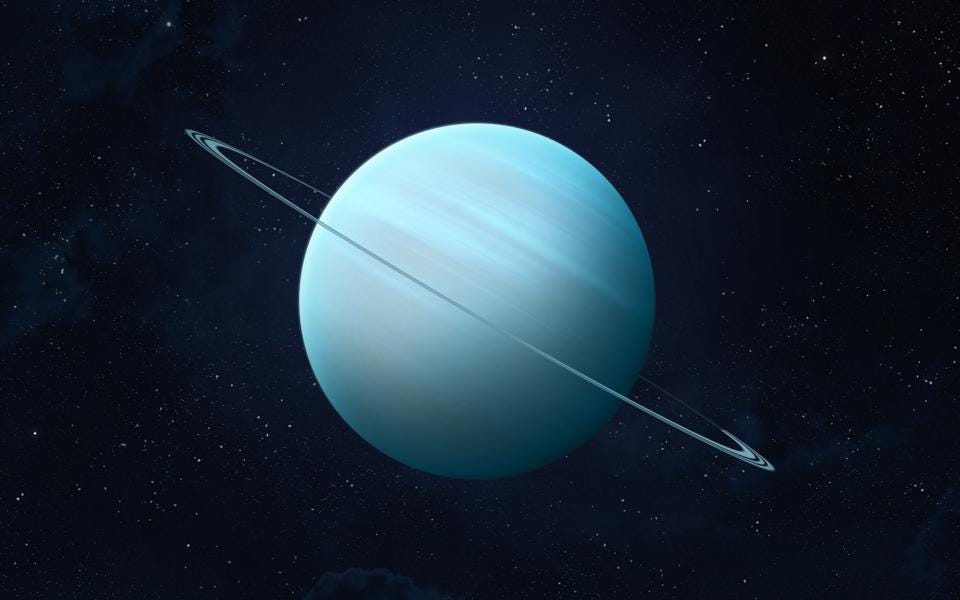

Uranus

Uranus is the seventh planet from the Sun, and has the third-largest diameter in our solar system. It was the first planet found with the aid of a telescope, Uranus was discovered in 1781 by astronomer William Herschel, although he originally thought it was either a comet or a star. The seventh planet from out Sun, Uranus is the third-largest in terms of size, the fourth-largest in terms of mass, and one of the least dense objects in our Solar System. And interestingly enough, it is the only planet in the Solar System that takes it name from Greek (rather than Roman) mythology.